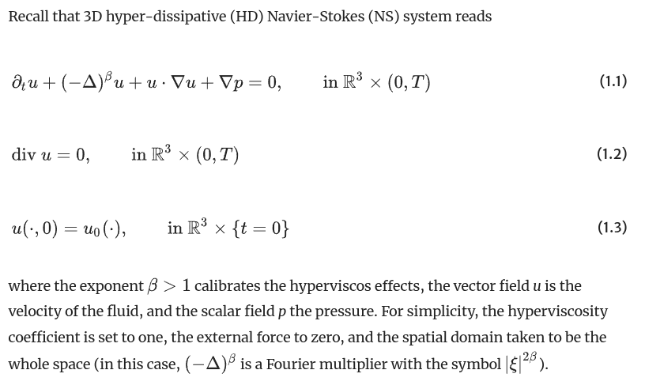

items = [10, 20, 30] result = items[3]
# Traceback (most recent call last): # File "app.py", line 2, in <module> # result = items[3] # ~~~~~~~ # IndexError: list index out of range

LOOK
MATH
CODE
↺
✕
↑